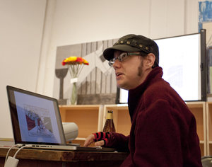
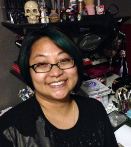

Aria
 Aria, AKA ShePaintswithBlood is a self taught artist from Colorado.
Aria, AKA ShePaintswithBlood is a self taught artist from Colorado.
Her dark surrealism art is inspired by dreams, nature and nostalgia as well as all the many furry, scaly and crawling beasts she lives with.
She is most fascinated by the beautiful and violent balance of wild things and the cycle of life, death and rebirth.
You can view her body of work under her art handle ShePaintsWithBlood at http://www.ShePaintsWithBlood.com/ or on https://www.Facebook.com/ShePaintsWithBlood or in person at Valkarie Gallery in Lakewood Colorado.
Jada Dunn
 Jada Dunn is 14 years old and was born in Honolulu, Hawaii. She moved to Colorado when she was 8. At 3, she started drawing chocolate chip cookies and spiders but has moved on to drawing manga. She now attends Morey Middle School and hopes to get into Denver School of the Arts for high school.
Jada Dunn is 14 years old and was born in Honolulu, Hawaii. She moved to Colorado when she was 8. At 3, she started drawing chocolate chip cookies and spiders but has moved on to drawing manga. She now attends Morey Middle School and hopes to get into Denver School of the Arts for high school.
Dylan Edwards
Dylan Edwards is the author of Transposes (Northwest Press, 2012), a biography of queer-identified transmasculine people, which was a Lambda Literary Award Finalist in 2013 for Best Transgender Non-Fiction. His new comic, Politically InQueerect: Old Ghosts and Other Stories (Northwest Press, 2015), is a skeptical ghost story for people who wish Edmund Blackadder were gay. His comics have also appeared in various anthologies, including the Ignatz Award-winning QU33R (Northwest Press, 2013), the Lambda Literary Award-winning No Straight Lines (Fantagraphics, 2012), and the all-queer science fiction and fantasy Beyond Anthology (2015). His current project is Valley of the Silk Sky, a queer YA science fiction webcomic which can be read online at valleyofthesilksky.tumblr.com.
Julie Hamilton
 Julie Hamilton is a Denver based graphic designer, illustrator and all-around crafty person. With an eclectic professional background in fashion design, costuming, and architectural drafting, she brings a unique perspective to all her projects. Her artwork, including postcards, stationery, accessories, plushies and other collectibles, is available through her Etsy shop at http://www.etsy.com/shop/TheBottleCapPixie. For more information about upcoming shows please visit http://www.bottlecap-graphics.com.
Julie Hamilton is a Denver based graphic designer, illustrator and all-around crafty person. With an eclectic professional background in fashion design, costuming, and architectural drafting, she brings a unique perspective to all her projects. Her artwork, including postcards, stationery, accessories, plushies and other collectibles, is available through her Etsy shop at http://www.etsy.com/shop/TheBottleCapPixie. For more information about upcoming shows please visit http://www.bottlecap-graphics.com.
Dion Harris
 Born in Carbondale, IL, but raised in a “Southern” household in Colorado, Dion Harris arose from the primordial ooze to make pretty pictures for your eyes to feast upon. His drawing, which began at age 3, carried him through the military. In recent years, he seriously rededicated himself to honing his craft, because creating a comic book has been a life-long dream and art was his first love.
Born in Carbondale, IL, but raised in a “Southern” household in Colorado, Dion Harris arose from the primordial ooze to make pretty pictures for your eyes to feast upon. His drawing, which began at age 3, carried him through the military. In recent years, he seriously rededicated himself to honing his craft, because creating a comic book has been a life-long dream and art was his first love.
Shoshanah Holl
 Shoshanah Holl is a writer first published in 2013, and illustrator who’s worked on everything from boardgames to Christmas stories. She first discovered steampunk through the work of H.G Wells at a young age, around the same time her crippling fear of Morlocks was born.
Shoshanah Holl is a writer first published in 2013, and illustrator who’s worked on everything from boardgames to Christmas stories. She first discovered steampunk through the work of H.G Wells at a young age, around the same time her crippling fear of Morlocks was born.
Jacenta Irlanda
Jacenta Irlanda is a fine artist and illustrator residing in Colorado. She obtained a bachelor’s of fine arts from the University of Colorado- Denver and is currently attending Naropa University for transpersonal counseling psychology in art therapy. In 2012 she studied abroad in Italy learning print making and book binding. Irlanda is mostly known for her imaginative world building, character design and story creation. Her work has appeared in Denver galleries, coffee shops, on posters and programs for plays, on cd covers and published book covers. She has her own art business called Centalynn Artworks which exhibited at Denver Comic Con of 2015. She is thrilled to be a part of AnomalyCon for the first time.
Jane Irwin
 Hi! I’m Jane Irwin, and I make comics. So far I’ve created the two Vögelein graphic novels, and recently Kickstarted my third book, Clockwork Game, a retelling of the true story of the world’s first chess-playing automaton..
Hi! I’m Jane Irwin, and I make comics. So far I’ve created the two Vögelein graphic novels, and recently Kickstarted my third book, Clockwork Game, a retelling of the true story of the world’s first chess-playing automaton..
I currently live in Kalamazoo, MI, where I work full-time as a web developer, drawing comics whenever I can. I’m also lucky enough to be married to the incredibly talented Paul Sizer (B.P.M, Moped Army, Little White Mouse).
Chaz Kemp
 Bram Stoker Award finalist Chaz Kemp embraces an Art Nouveau style that incorporates vibrancy and color scheme into fantasy and steampunk art in a way that is rarely seen. As an illustrator, the influence of Alphonse Mucha & Ivan Bilibin is evident in his award-winning work that combines the artistic energy of the Roaring 20s with the untamed possibilities of steampunk and fantasy.
Bram Stoker Award finalist Chaz Kemp embraces an Art Nouveau style that incorporates vibrancy and color scheme into fantasy and steampunk art in a way that is rarely seen. As an illustrator, the influence of Alphonse Mucha & Ivan Bilibin is evident in his award-winning work that combines the artistic energy of the Roaring 20s with the untamed possibilities of steampunk and fantasy.
Chaz Kemp is a featured artist in steampunk legend Paul Roland’s book “Steampunk: Back to the Future with the New Victorians”. Amazing Stories magazine featured him in the November 2014 issue, and his work has been seen in other publications such as Steampunk Magazine, Savage Insider and Aurealis. Over the years Chaz has created art for game publishers, sci-fi/fantasy conventions and several book covers including the anthology “Cthulhu Passant” by Travis Heerman & the Oilman’s Daughter by Local Hero Press. In 2012, he illustrated his first graphic novel entitled “Behind These Eyes” written by Guy Anthony De Marco and Peter J. Wacks. The graphic novel was a Bram Stoker Award finalist.
He also performs with the dark, faerie, Celtic acapella band, Pandora Celtica.
David Malki
 David Malki ! is the author of the comic Wondermark (wondermark.com), a gag strip crafted entirely from 19th century illustrations. Wondermark was syndicated in The Onion, and has three hardcover collections from Dark Horse Books, the first of which was nominated for the Eisner award (the highest honor in comics) for ‘Best Humor Publication.’ It’s possible that this was a clerical error. He’s also co-editor of the bestselling Machine of Death series of fiction anthologies, and most recently, creator of the morbid storytelling game Machine of Death: The Game of Creative Assassination (machineofdeath.net). In his spare time, he uses dice to generate fantastic creatures and draws their portraits at rollasketch.com. He lives in Los Angeles with his wife Nikki, and he likes to fly airplanes.
David Malki ! is the author of the comic Wondermark (wondermark.com), a gag strip crafted entirely from 19th century illustrations. Wondermark was syndicated in The Onion, and has three hardcover collections from Dark Horse Books, the first of which was nominated for the Eisner award (the highest honor in comics) for ‘Best Humor Publication.’ It’s possible that this was a clerical error. He’s also co-editor of the bestselling Machine of Death series of fiction anthologies, and most recently, creator of the morbid storytelling game Machine of Death: The Game of Creative Assassination (machineofdeath.net). In his spare time, he uses dice to generate fantastic creatures and draws their portraits at rollasketch.com. He lives in Los Angeles with his wife Nikki, and he likes to fly airplanes.
Sarah Menzel
 Sarah Menzel is a freelance illustrator native to Colorado with a BFA in Sequential Art. She has worked as a storyboard artist for Fisher Price and an asset artist for mobile games. With a love of visual storytelling she is also involved as a comic colorist and childrens book illustrator. In her free time she enjoys drawing dreamy illustrations usually involving ladies with interesting hair. You can find Sarah’s work at http://www.sarahmenzel.com/ or on Instagram @shadowbucket.
Sarah Menzel is a freelance illustrator native to Colorado with a BFA in Sequential Art. She has worked as a storyboard artist for Fisher Price and an asset artist for mobile games. With a love of visual storytelling she is also involved as a comic colorist and childrens book illustrator. In her free time she enjoys drawing dreamy illustrations usually involving ladies with interesting hair. You can find Sarah’s work at http://www.sarahmenzel.com/ or on Instagram @shadowbucket.
Gerry Mulowayi
 Gerry Mulowayi is a local Graphic Illustrator in Denver. In his work he work tackles concepts of good vs evil, religion, fantasy and comics. With each new illustration he strives to not repeat or copy any existing form of the concept, or idea. Instead he tries to make each work very unique, expressive and vibrant through an explosion of color.
Gerry Mulowayi is a local Graphic Illustrator in Denver. In his work he work tackles concepts of good vs evil, religion, fantasy and comics. With each new illustration he strives to not repeat or copy any existing form of the concept, or idea. Instead he tries to make each work very unique, expressive and vibrant through an explosion of color.
Pink Pitcher
 Pink Pitcher is a seamstress, textile and domestic historian, and artist (among other titles). She enjoys costuming and cosplaying in a variety of genres. She is currently publishing her very first comic – Root & Branch. She would really love to talk about neolithic spinning techniques, with pretty much anyone.
Pink Pitcher is a seamstress, textile and domestic historian, and artist (among other titles). She enjoys costuming and cosplaying in a variety of genres. She is currently publishing her very first comic – Root & Branch. She would really love to talk about neolithic spinning techniques, with pretty much anyone.
Tom Sarmo
 Tom Sarmo was born and raised in Denver, Colorado. He owns–and works in–the Cranky Bird Studio.
Tom Sarmo was born and raised in Denver, Colorado. He owns–and works in–the Cranky Bird Studio.
He’s been at it professionally for 25 years, and has work in a variety of collections, publications, and galleries. Tom’s artwork has ranged from children’s books and merchandise, record covers and commercial illustration, to privately commissioned work.
His original art is available at Helikon Gallery, the Arvada Center’s annual Art Show and Sale in December, and his work is represented by Willow: An Artisan’s Market.
Tom loves art, but particularly creative, illustrative types.
He works in a variety of media, and his subjects are fueled by his interests, which include anything Victorian and Edwardian, literature, science, history, music, and exploring.
He is dedicated to sharing knowledge, and provides workshops and presentations on illustration and art techniques. In addition to , Tom teaches workshops at the annual Art Makers Denver and Foothills Art Center in Golden.
He is currently at work on three books.
http://www.tomsarmo.com/
stevieraedrawn
Stevie is a digital illustrator and comic artist. She’s been painting digitally since before USB ports.
With a degree in art and creative writing from CU Boulder, Stevie paints individual illustrations, draws, inks, and colors comics, and teaches other artists. She runs a live painting stream through twitch.tv as stevieraedrawn where she helps others get into a “mistakes are good” mindset. She shares her process for illustrations, provides paintover critiques, and gives viewers a peek into her forthcoming collaborative comic “Going Still,” written by author M.K. Sauer.
Take a peek at some of her work at http://stevieraedrawn.com/
Paul Sizer
 Striving to create industrial strength graphic design for the masses since 1992, Paul Sizer has worked to find the common ground between his two loves; comic art and graphic design. Paul has self published three graphic novels under his own Café Digital imprint and works with eclectic clients all over the world, including collaborating with 80’s synthpop star Thomas Dolby on Dolby’s most recent album, “A Map of the Floating City” and designing the dieselpunk-inspired Floating City online game connected with the album. Sizer has also found fans around the world for his retro-styled propaganda posters, including his popular “Science Builds The Future” series.
Striving to create industrial strength graphic design for the masses since 1992, Paul Sizer has worked to find the common ground between his two loves; comic art and graphic design. Paul has self published three graphic novels under his own Café Digital imprint and works with eclectic clients all over the world, including collaborating with 80’s synthpop star Thomas Dolby on Dolby’s most recent album, “A Map of the Floating City” and designing the dieselpunk-inspired Floating City online game connected with the album. Sizer has also found fans around the world for his retro-styled propaganda posters, including his popular “Science Builds The Future” series.
Paul works and lives in Kalamazoo, Michigan with his wife, fellow comic creator Jane Irwin. You can see all of Paul’s current work at www.paulsizer.com
Sarin Tatroe
Sarin is a local artist living in Thornton who has been drawing on and off since she can remember. She is currently trying her hand out as a freelance artist after bidding the corporate world farewell to be a stay at home mom. When not “arting”, as she calls it, she loves to daydream and role play in between chasing her pre-schooler around the house.
Her art is mostly a blend of anime/manga style with a little bit of realism injected into her pieces. Copic markers are her current favorite medium of choice. She has played with water color, watercolor pencils, pencils, and many other artsy mediums and has mixed them all together at times.
She likes to wonder what stories people will come up with when diving into her art since she believes that all art has a story. Sarin is currently working on a few personal projects that seem to never have an end or a definite beginning. Her works may be viewed at http://sariochan.deviantart.com. More recent works are usually able to be viewed at local conventions.
Stan Yan
 Stan Yan is a Denver-based writer/illustrator, caricature artist and instructor. Growing up in Denver, Yan, a self-taught artist, went to school at the University of Colorado in Boulder where he got his bachelor’s degree in accounting, where Yan’s life took the tragic turn into sales for the securities industry, where he wallowed in ethical poverty on-and-off for thirteen years. Yan takes his frustrations out by penning graphic novels such as The Wang.
Stan Yan is a Denver-based writer/illustrator, caricature artist and instructor. Growing up in Denver, Yan, a self-taught artist, went to school at the University of Colorado in Boulder where he got his bachelor’s degree in accounting, where Yan’s life took the tragic turn into sales for the securities industry, where he wallowed in ethical poverty on-and-off for thirteen years. Yan takes his frustrations out by penning graphic novels such as The Wang.
In 2005, Yan has gave up on financial security and become a full-time freelance cartoonist, illustrating SubCulture for Ape Entertaiment and Action Lab Danger Zone, creating comic strips for the financial and sales industry, drawing zombie caricatures, and picking up odd illustration and teaching jobs when folks are feeling agonizing pity for him. Stan teaches Summer camps, after school programs, workshops, and helped to develop a degree program in graphic storytelling as an adjunct faculty member at the Community College of Aurora. His recent credits include art and colors for Show Devils (Mother Mind Studios), writing and art for Vincent Price Presents (BlueWater Productions / Stormfront Publishing), and art for Alien Abduction (CleverQuickGames). But, he’s probably best known for doing zombie and pony caricatures. Upcoming projects include development of a zombie picture book and a graphic novel about his best friend’s battle with cancer.